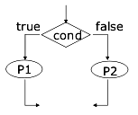
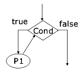
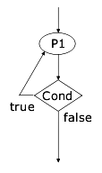
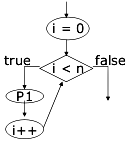
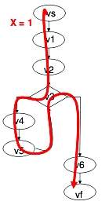

:: LPS - Testing ::
Perché il testing
Il sw al 100 % senza difetti non esiste. Anzi, in generale l'industria del software è l'unica che permette la vendita di prodotti con difetti, e poi chiede soldi per fissare i bug.
Nell'ingegeneria classica è prevista una fase di testing, ma quando si cerca di applicare il concetto all'ingegneria del software ci sono dei problemi in cui scontrarsi:
- nell'ingegneria classica, si devono testare certi precisi punti, predeterminati, o tutt'al più il loro intorno -> nell'ignegneria del software se qualcosa funziona correttamente in un punto del dominio, non è affatto detto che nel suo intorno lo faccia ancora
- un ponte, per fare un esempio di ingegneria edile, deve resistere ad un certo carico. Ma che cosa vuol dire per un software essere resistente? Questo dipende dal tipo di software e dal suo utilizzo: non è affatto una cosa generica.
Limiti del testing
Cominciamo subito a dire che il testing, e tutto ciò che studieremo in futuro al riguardo, ha questi limiti:
- va bene per trovare i bug
- ma non va bene per provare l'assenza dei bug
Questo vuol dire che probabilmente facendo testing riuscirò a trovare dei bug, ma non esiste nessun testing che, alla fine della sua esecuzione, mi dirà con certezza che il mio software sia corretto.
Più avanti saranno espressi i teoremi che dimostrano ciò.
Linee guida generali che si richiedono ad una procedura di testing
Il testing dovrebbe avere certe caratteristiche. Accanto ad ogni caratteristica c'è scritto se essa viene osservata o no al giorno d'oggi:
- automatizzato -> sì
- riguardare tutte le fasi dello sviluppo, e non solo la stesura del codice (eg: specifica, progettazione, manutenzione etc.) -> no
- essere esteso a tutti i componenti di un sistema -> sì
- essere pianificato -> solo per certi sw
- seguire degli standard -> no
Economia del testing
Vanno dette subito alcune cose:
- all'inizio di una fase di testing, si trovano tanti bug. Poi il tempo passa e se ne trovano sempre di meno, ma ovviamente non sappiamo se sono finiti o no
- la maggior parte dei bug sono banali, mentre quelli critici sono pochi: assieme al punto precedente, ne consegue che si trova la maggior parte dei bug banali all'inizio, mentre quelli critici, SE si trovano, li si trova dopo tanto tempo.
Ci sono delle procedure di analisi statica che permettono di verificare la correttezza di un sw, ma sono molto molto costose (in pratica trasformano un programma in una formula logica, la cui verità è più o meno facilmente dimostrabile).
In genere, visto che la fase di testing è costosa, occorre sapere innanzitutto quanto costa proseguire, e confrontare ciò con il costo della distribuzione di un software difettoso: costo sw difettato = costo del danno che produce * probabilità che il danno accada.
Quindi, se la prob che un certo danno accada è bassa, ci si può permettere di dedicare le proprie forze a qualcos'altro.
Problema: chi dice che un danno costa poco, e che la sua probabilità di accadere è bassa? Occorrono dei criteri formali per stabilire ciò, non basta l'intuizione...
Terminologia
- malfunzionamento (failure): il programma non funziona in modo corretto
- difetto (fault, bug): un elemento del codice sorgente non corrisponde alle aspettative
- errore: fattore umano che ha causato il difetto
Ho quindi una sequenza di cause: errore -> difetto -> malfunzionamento. Vuol dire che c'è un errore umano che porta all'implementazione di codice buggato, e la conseguenza è che il programma non funziona come dovrebbe.
Il testing consiste nell'eseguire il programma in certi casi di test, opportunamente studiati, così che ci si possa accorgere di eventuali malfunzionamenti, e scoprire quali siano i difetti che li causano. La colpa invece sarà sempre degli altri.
Il debugging è invece il correggere i difetti dopo che si sono scoperti errori. Quindi debugging e testing non sono sinonimi.
Tipi di testing
I testing si possono classificare in 3 modi:
- livello
- aspetti
- accessibilità
Una procedura di testing quindi, a seconda di come viene classificata secondo queste 3 categorie, sarà posizionata in un certo punto del cubo ideale con queste 3 categorie sugli assi,
Livelli
I livelli sono i test rispetto a quello che dovrebbe essere il programma, secondo diversi tipi di requisiti. Requisiti diversi portano a test diversi:
- requisiti dell'utente -> acceptance testing
- specifica -> conformance testing
- progetto -> integration testing
- codice -> unit testing
- retrocompatibilità -> regression testing
Ora li vediamo un po' tutti, ma quello che faremo noi sarà esclusivamente unit testing.
Unit testing
Prendo una unità di codice, che sarebbe una classe, la quale va a testare i singoli metodi delle classi che ho implementato.
Come faccio a testarli? Creo del codice, chiamato test driver, il quale chiama il metodo sotto esame con certi parametri, e verifica che il metodo si comporti in modo conforme (conforme a che cosa? Alle specifiche? Non sempre -> poi vedremo).
Che cosa succede se il metodo che sto esaminando a sua volta fa appello ad altri metodi? La soluzione è creare test stub, cioè abbozzi di test. Se nel metodo A ho la chiamata al metodo B, e voglio evitare di impegolarmi nell'analisi del metodo B, allora sostituisco le chiamate al metodo B con degli abbozzi, che restituiscono un valore a me noto. In questo modo sono in grado di isolare i malfunzionamenti presenti in A e dovuti al codice di A, rispetto ai malfunzionamenti presenti in A ma dovuti al codice che A chiama, come ad esempio B.
Test d'integrazione
Dopo il test sulle singole unità, occorre testare che tutte insieme vadano d'accordo. Non è affatto così scontato. In generale, c'è la nozione di importazione ed esportazione. Un metodo importa qualcosa ed esporta qualcos'altro.
- i valori in uscita di un metodo, che fanno da ingresso per un altro metodo, sono compatibili? Di solito ci pensa il compilatore (e non dovrebbe farlo, a mio avviso).
- i dominî di import e export sono gli stessi?
- I dati importati ed esportati sono rappresentati allo stesso modo?
È eclatante il caso di una sonda Pioneer che crashò perché c'era del codice che trattava una variabile in sistema metrico decimale, e dell'altro codice ad esso collegato che gli passava la variabile, ma da lui considerata secondo il sistema imperiale!
Le tecniche per fare test di integrazione sono le seguenti:
- top-down: scrivo il test driver di un metodo, e stubbo tutte le sotto chiamate. Poi faccio lo stesso per ogni sottochiamata etc. etc. fino ad arrivare in fondo
- bottom-up: faccio il test driver di un metodo base, e man mano faccio il test drive di tutti i metodi che si rifanno a lui, e poi salgo
- big-bang: faccio il test simultaneo di tutte le componenti (per risparmiare tempo)
Regression testing
È il livello più alto di testing. Voglio che il mio programma lavora correttamente anche rispetto alle sue versioni precedenti. Siccome i costi di sviluppo incidono per 1/3 sulle spese totali di produzione di un sw, e quelli di manutenzione per i 2/3, se ogni volta che faccio qualcosa devo ricominciare a manutenere da capo, allora è grama.
Quindi, quando modifico un programma, devo stare attento:
- devo eliminare i bug che sono stati segnalati nell'ultima versione
- non devo introdurne di nuovi, per quanto possibile
- devo poter riutilizzare tranquillamente i vecchi casi di test
- riutilizzando i vecchi casi di test devo accertarmi che il comportamento sia rimasto uguale
Aspetti
Degli aspetti non si fa niente qui. Infatti si tratta delle stesse cose che abbiamo visto ad inizio corso relative alle proprietà del software, in particolare quello sicuro.
Accessibilità
Stiamo parlando del tipo di accesso che i tester hanno sul codice:
- black-box: non ho accesso al codice, e tratto quindi il sw come una scatola chiusa, avendo in mano solo la specifica
- white-box: ho accesso al codice
La differenza tra queste due metodologie non è affatto banale e scontata. Spesso i metodi white-box si chiamano test basato sul programma, mentre quelli black-box test basato sulle specifiche. C'è anche la grey-box, che è una via di mezzo, ma vabbeh. Adesso vediamo nello specifico che cosa cambia tra le due scatole.
White-box
Con il testing white-box, si derivano i casi di test direttamente dal programma. Controllo il programma mentre questo viene eseguito, vedo quanta percentuale del programma ho coperto, e vedo come si comporta.
La copertura del programma, ovvero quanta parte di esso è stata compresa nel mio test, è un criterio oggettivo sulla validità del mio testing.
Ma nel sistema white-box c'è qualcosa di insitamente non oggettivo, che è la derivazione dei casi di test dal codice sorgente. In pratica l'analizzatore guarda il codice, stabilisce come secondo lui dovrebbe funzionare, e ne deriva i test.
Black-box
In questo tipo di testing si ignora la struttura del programma, ma guardo i soli requisiti. Accedo al programma solo dalla sua interfaccia esterna, e non guardo come è fatto dentro.
Guardando e analizzando la specifica, si ricavano i test, e si controlla che il programma sia conforme alla specifica. Si vede subito che si tratta di un procedimento oggettivo.
Quale scelgo?
Perché, ci si chiederà, esiste ancora il white-box, che è un po' aleatorio? Vediamo un po' i pro ed i contro di ciascuna delle due metodologie.
Il white-box ha queste caratteristiche:
- pro: il codice è un'importante fonte di informazioni
- contro
- è impossibile trovare errori di omissione. Se qualcuno non ha scritto del codice, è anche impossibile testarlo, e se non ho la specifica non ho nemmeno idea che stia mancando...
- non fornisce test oracles, cioè oracoli che mi dicono se il test ha evidenziato un malfunzionamento o no. In pratica, il criterio per stabilire se un test è negativo o positivo è quello che passa per la mente al tester in quel momento
Il black-box ha queste altre caratteristiche:
- pro: ha l'oracolo, che è la specifica. Se il programma rispetta la specifica, è giusto. Se no, no
- contro:
- non sempre le specifiche sono disponibili
- quando sono disponibili, non sempre le specifiche sono scritte in modo formale. Se non sono scritte in modo formale, non posso ricavare in automatico i casi di test
- è molto più faticoso da tirare in piedi.
Testing basato sui programmi
Qui vediamo in dettaglio il white-box testing. Il black-box lo trascuriamo, perché troppo complesso. Si affronta in altri corsi.
Dobbiamo arrivare alla definizione del grafo di flusso di un programma, per poi affrontre tutto il resto.
Definizioni
Il programma P lo dobbiamo considerare come una funzione che va da un dominio ad un codominio: P:D->R. È una funzione parziale, perché non è detto che sia definita su tutti gli elementi del dominio.
Il predicato OK è in realtà un predicato multiforme:
- OK(P,d) è vero se il programma P è corretto per l'input d appartenente al dominio D
- OK(P) è vero se il programma P è corretto per ogni d appartenente a D
Tramite il predicato OK posso dare le definizioni di failure, bug ed errore:
- failure = ~OK(P,d)
- bug (fault) = P è stato implementato nel programma P'. Se P != P', allora la diversità è il bug. In altre parole, esiste un d appartenente a D tale che OK(P,d) != OK(P',d)
- errore = eh no, questo non possiamo definirlo in termini di OK, perché è la causa umana di tutto:)
Il caso di test è semplicemente un elemento del dominio del programma. Un test set (insieme di test), indicato con T, è un sottinsieme finito del dominio del programma.
Il predicato OK si trasforma ancora e diventa OK(P,T), che restituisce true se il programma è corretto per ogni elemento t appartenente al test set T.
Se il test set è negativo, vuol dire che non sono stati riscontrati errori nel programma. Se è positivo è il contrario.
Test ideale
L'ideale sarebbe avere il test ideale, ovvero prendere un sottinsieme finito del dominio D, controllare il programma contro questo sottinsieme, e poter dedurre per via di qualche magia che, se il programma è corretto per questo sottinsieme, allora è corretto per tutto il dominio.
Purtroppo tutto ciò è vana speranza: in generale il test ideale non esiste. C'è per piccole funzioni, ma non c'è nessun algoritmo che dato un programma ci produca il test ideale.
C'è anche un'altra cosa da notare: se T coincide con D, allora sì che il test ideale esiste: è tutto il dominio stesso! È ovvio che se il programma funziona per tutto il dominio, allora è corretto. Ma il problema è che spesso (spessissimo) il dominio, per quanto finito, è gigantesco e quindi non è possibile fare un test esaustivo.
Per fare un esempio, se ho una funzione che prende per argomento due numeri interi, il test esaustivo dovrebbe verificare tutte le coppie possibili di interi passate alla funzione. Se ho 232 possibili interi sul mio computer, allora il test esaustivo dovrebbe eseguire 232 * 232 controlli! In qualche migliaio di anni ce la caviamo.
Se poi il dominio è infinito, allora non c'è speranza di fare un test esaustivo.
Test di adeguatezza
Ma noi persistiamo nell'utopia di volere un test set che funzioni bene. Per fare ciò, introduciamo il test di adeguatezza, detto anche criterio di adeguatezza o, più semplicemente, criterio.
Il criterio, nella sua forma iniziale, va visto come un predicato che, dato il programma P, la specifica S e il test T, mi dice se quel test T è adatto a verificare la correttezza di P rispetto ad S: C:P*S*T -> {true, false}.
Però, se ho un test basato sul programma, la specifica S non ce l'ho. E se ho un test basato sulla specifica, il programma P non ce l'ho:
- white-box => C: P*T -> {true, false}
- black-box => C: S*T -> {true, false}
Ma noi siamo più furbi, e allora cambiamo le carte in tavola. In pratica, vogliamo far diventare questo predicato una funzione generatrice di test set. In altre parole, voglio avere una funzione C: S*P -> T, cioè data la specifica S ed il programma P, voglio che la funzione mi generi automaticamente un test set T adatto a verificare la correttezza del mio programma.
Proprietà del criterio
Un criterio può avere queste proprietà:
- affidabile = un criterio è affidabile se, per ogni coppia di test set T1 e T2, un malfunzionamento rilevato da T1 viene rilevato anche da T2. In pratica sto chiedendo al criterio di essere coerente con tutti i test set che genera: tutti devono trovare (o non trovare) lo stesso errore, non sono ammessi comportamenti incoerenti tra due test set diversi generati dallo stesso criterio affidabile
- valido = un criterio è valido se, tra tutti i test set che genera, ce n'è almeno uno che rileva un determinato malfunzionamento
- ideale = un criterio è ideale se è allo stesso tempo valido ed affidabile
Per chiarire la differenza tra queste proprietà, vediamo un esempietto:
int raddoppia (int x) {
return x*x;
}
Questo codice è palesemente errato, perché la specifica che posso dedurre dal nome della funzione è che quella funzione debba restituire il doppio del parametro passato. Attenzione: siccome sto facendo white-box, non ho sottomano nessuna specifica, quindi la deduco dal nome della funzione, o dal contesto o quello che è. Se deduco male, di conseguenza creo anche dei test set poco utili.
Tornando a noi, supponiamo di avere il criterio C che ci dà dei test set, e che i test set siano un insieme di valori che diamo in pasto alla funzione:
- se C ci dice di testare i valori {0,1}, allora il criterio è affidabile. Infatti, sia che gli passi 0 che 1, il comportamento è corretto ed è coerente tra i due elementi
- se C mi dice di testare i valori {2,3} è valido perché in almeno uno dei casi (quando testo il 3) scopro il malfunzionamento
- se C mi dice di testare i valori {4,5,6} è affidabile, perché tutti i valori di test mi danno lo stesso comportamento, cioè l'errore. È valido perché scopre l'errore. È quindi ideale.
Quindi, ideale vuol dire che
- scopro il difetto (valido)
- scopro sempre il difetto (affidabile)
Teorema di Goodenough e Gerhart
Il teorema dice che, se il mio criterio C è ideale. e il test sul programma P con i test set generati da C è negativo, allora il programma è corretto.
Teorema di Howden
Non esiste un algoritmo che, dato un programma P, sia capace di generare un test ideale finito.
Dijkstra aggiunge che il test di un programma può rilevare quindi la presenza di un malfunzionamento, ma non può mai mostrarne l'assenza, proprio perché non è possibile avere un test ideale finito (a parte i casi banali...).
Testing strutturale dei programmi
Adesso che abbiamo idea di che cosa fare, il nostro obiettivo è avere un sistema un po' meno "sentimentale" e più algoritmico per ricavare i criterî. Non è sempre immediato vedere quello che va verificato. Con il flusso di controllo del programma, sono in grado di valutare la copertura di un test.
Il flusso di controllo
Non è nient'altro che il classico diagramma di flusso:
- gli ovali sono le istruzioni
- i rombi le condizioni, e hanno un ramo d'uscita true ed un ramo false
Da notare che NON si scrivono come istruzioni (cioè negli ovali) le dichiarazioni delle variabili. Se da qualche parte ho int x; non lo metto nelle istruzioni. Ocio però che se ho int x = 10; allora sì, perché ho anche l'assegnamento, e l'assegnamento è un'istruzione e va messa negli ovali.
If... else...

È abbastanza semplice: se la condizione è vera, vado da una parte, se no vado dall'altra.
While

Il while è anch'esso una condizione, e notate che se essa non è soddisfatta si ritorna subito al controllo della condizione
Il do...while è una variazione del while, in cui si ha la certezza che il codice viene eseguito almeno una volta:

For
Il ciclo for va visto come un'implementazione semplificata del ciclo while, come infatti è. Lo schemino dà un'idea della sua rappresentazione in diagrammi di flusso.

Criteri di copertura
Ci sono diversi criteri di copertura, cioè funzioni che ci dicono come creare i test set in modo da coprire il nostro programma.
Criterio di copertura delle istruzioni
Qui lo scopo è coprire tutte le istruzioni. Il criterio dice che un test set T è adeguato a testare un programma P, secondo il criterio di copertura delle istruzioni, se per ogni istruzione s appartenente a P esiste un t appartenente a T che la esegue. Vogliamo in altre parole che ogni istruzione venga eseguita almeno una volta.

In questo esempio, c'è una condizione, ma per eseguire almeno una volta tutte le istruzioni è possibile fare un giro solo.
Per valutare il criterio di copertura, si usa la fault detection capability, ovvero
- quali errori può trovare
- quali errori garantisce di trovare
La copertura delle istruzioni passa per tutte le istruzioni, e quindi trova tutte le istruzioni errate, ma non è per niente detto che trovi anche gli errori nelle decisioni.
Per misurare quanto del mio programma ho coperto, semplicemente faccio numero di statement eseguiti / numero di statement eseguibili e ho un numero compreso tra 0 e 1 che mi dà la misura della mia copertura.
Branch coverage
Qui, l'obiettivo non è eseguire tutte le istruzioni, bensì percorrere tutti i cammini. Voglio che un cammino sia percorso almeno una volta da un test.
Ovviamente, rispetto alla copertura delle istruzioni, si hanno dei test set differenti. Prendendo lo stesso esempio di prima, per avere statement coverage bastava un test set solo, ma se voglio fare branch coverage me ne servono almeno due, perché dalla condizione si diramano appunto due cammini diversi. Si può anche affermare che il branch covering è più forte rispetto allo statement coverage, perché un test set che soddisfa il branch, soddisferà anche lo statement, ma non accade il viceversa.
La misura della copertura è data da numero cammini eseguiti / numero cammini eseguibili.
Come generare i casi di test
Si può procedere in un modo abbastanza meccanico, per generare i casi di test. Ecco i passaggi:
- si fa il grafo di flusso
- si trovano i percorsi che vanno eseguiti
- per ognuno di questi percorsi, cerco i valori di input che fanno sì che il programma li percorra
- ottimizzo eliminando i test non necessari
Per cercare i valori di input, si può fare tutto a mente, ragionandoci sopra, oppure seguire questa scaletta:
- si va alla fine del cammino in esame
- si procede all'indietro, saltando tutte le istruzioni di assegnamento fino alla prima condizione che si trova (cioè l'ultima del cammino), e si tiene nota del valore che la condizione vuole per eseguire il cammino
- continuando a ritroso, per ogni assegnamento sulle variabili trovate nelle condizioni già viste, si modifica il valore della variabile
Copertura delle decisioni e delle condizioni
Si tratta di altri due criteri, e per introdurli occorre stabilire la differenza tra una decisione ed una condizione.
La decisione è tutto ciò che è contenuto nella guardia dell'if. Se ho una riga come
if ((gatto > 20) && (cane < 30)) { ...}
allora la parte ((gatto > 20) && (cane < 30)) è la mia decisione.
Invece, nella stessa riga ci sono due condizioni: (gatto > 20) e (cane < 30).
Copertura delle decisioni
Un test set è adeguato per coprire il programma P secondo il criterio di copertura delle decisioni, se per ogni decisione in P esiste:
- un caso di T che la prende
- un caso di T che non la prende
È in pratica equivalente a fare il branch covering, perché i branch vengono appunto generati dalle condizioni.
Copertura delle condizioni
Per ogni condizione, deve esistere un caso di test che la rende vera, ed un caso di test che la rende falsa.
Prendiamo ad esempio la decisione (x > 0) OR (y > 0). Le condizioni sono due, quindi in teoria devo avere:
- un caso di test che renda vera x > 0
- un caso di test che renda falsa x > 0
- un caso di test che renda vera y > 0
- un caso di test che renda falsa y > 0
Il punto è che il primo ed il terzo caso di test portano allo stesso cammino (vedi sotto per MCC). Quindi, in realtà a me bastano 2 cammini:
- (x = 1, y = -1)
- (x = -1, y = 1)
Infatti, il primo caso di test rende vera la prima e falsa la seconda, mentre il secondo caso di test rende falsa la prima e vera la seconda. Data la definizione di copertura delle condizioni, il criterio è soddisfatto.
MCC e MCDC
Ci sono altri due criteri:
- MCC = Multiple Condition Coverage
- MCDC = Modified Condition/Decision Coverage
MCC
Lo scopo dell'MCC è quello di testare ogni possibile combinazione dei valori di verità delle condizioni in ogni decisione.
Nell'esempio di sopra, avrei dovuto semplicemente evitare di semplificare, ottenendo così 4 differenti casi di test. Poi nella realtà accade che i casi di test si sovrappongano, e che quindi si possano ridurre di numero.
Questa faccenda è chiamata short circuit evaluation, ed è usata dai compilatori per creare codice più velocemente eseguibile.
Prendiamo questa decisione: a OR b or c. In teoria ho 3 condizioni (a, b e c), e quindi 2'3^' righe nella tavola di verità. Ma il compilatore è furbo: siccome per rendere vero un OR basta che una sola delle sue condizioni sia vera, non appena ne trova una vera smette di valutare quelle successive, e decide che la condizione è vera.
Allo stesso modo, in a AND b AND c, il compilatore sa che basta che una sola di queste condizioni sia falsa, per rendere l'AND falso. Pertanto, non appena ne trova una falsa evita di valutare quelle successive e stabilisce che tutta la decisione è falsa.
MCDC
Il test va preso in modo tale che ogni condizione all'interno di una decisione deve far variare in modo indipendente il valore finale nella decisione.
Che diavolo vuol dire? Vuol dire che, se ho 4 condizioni combinate in vario modo, devo trovare dei valori tali per cui il valore di verità dipenda dal variare di una sola di esse.
Ecco un esempio esplicativo: ((((a OR b) AND c) OR d) AND e).
Quando la a, e solo la a, è influente, ovvero, quand'è che il valore di verità della decisione dipende solo dalla variazione della a? La risposta è che a è influente quando:
- b è falsa
- c è vera
- d è falsa
- e è vera
Perchè?
- se b è falsa, allora a OR b dipende solo dalla a
- se c è vera, allora (a OR b) AND c dipende solo dal valore di verità di (a OR b), che abbiamo visto dipendere solo da a
- se d è falsa, etc. etc.
Si fa lo stesso ragionamento per tutte le variabili, e si tirano fuori i casi di test relativi. Possono anche accadere dei casi in cui il valore di una variabile sia indifferente: lo si segna con un underscore: _.
Torna alla pagina di LPS